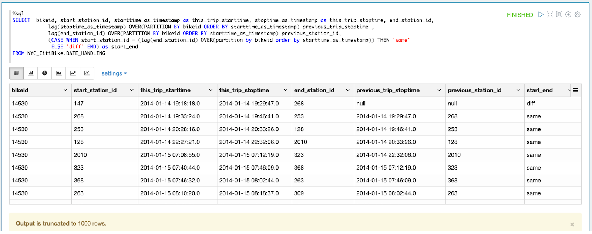
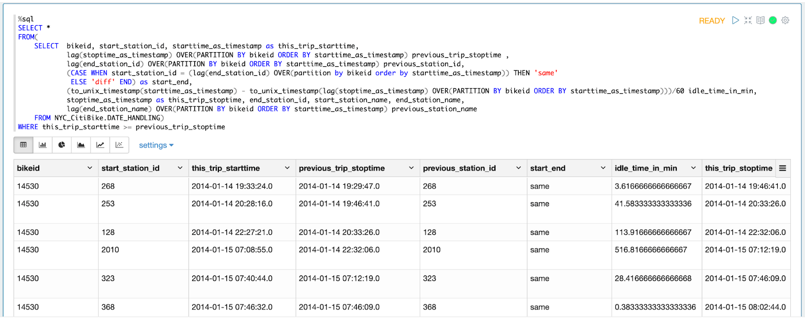
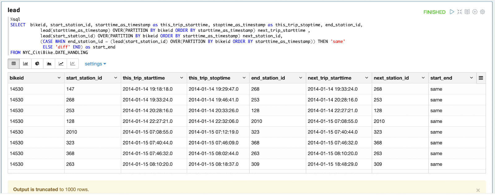
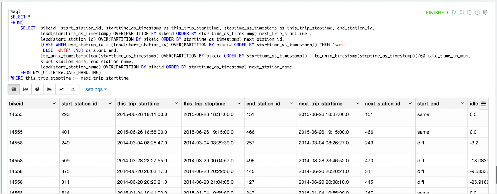
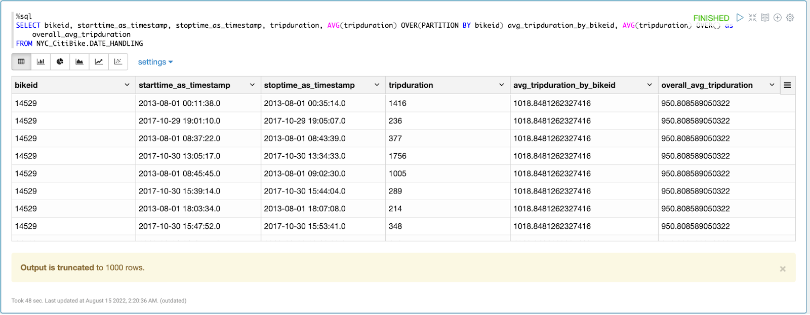
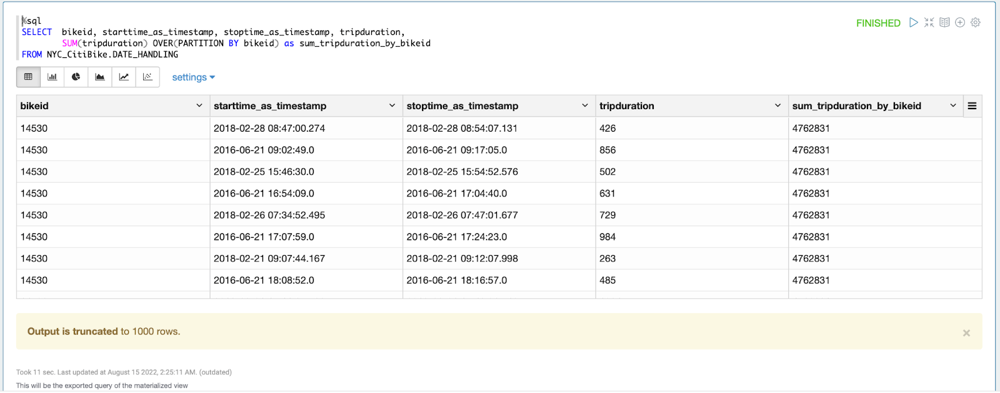

通常需要連續計算的資料需要多個 Subquery 來執行，但是這會讓 Code 變得很長又難懂，更會讓電腦的運算時間變得很長，因此這時候可以利用 Window Functions 來取代冗長的 Subquery，又可以減短運算時間。
主要以 CitiBike 資料介紹 lag 函數，其他的 window functions 以此類推。
lag |
lead |
rank |
dense_rank |
avg |
sum |
row_number |
OVER ([PARTITION BY column1] [ORDER BY column2])
OVER() clause 是個常常和 window function 一起用的指令，類似於使用 subquery 在
SELECT 指令中，但是它可以使得 query 運算更迅速，他的應用範圍也很廣。
PARTITION BY 根據指定欄位 colunm1 做分類，僅會依照分類做計算，不同分類分開計算ORDER BY 根據指定欄位 column2 排序lag(input[, offset[, default]]) [OVER (PARTITION BY column1 ORDER BY column2)]
input at the offsetth row before the current row in the window. The default value of offset is 1 and the default value of default is null. If the value of input at the offsetth row is null, null is returned. If there is no such offset row (e.g., when the offset is 1, the first row of the window does not have any previous row), default is returned.offset 列）我們指定的欄位值 input，並建立新的欄位。當我們所指定要回傳的欄位值為「空」時，會回傳 null (default)offset 的預設值為 1 ，default 的預設值為 null PARTITION BY 根據指定欄位 colunm1 做分類ORDER BY 根據指定欄位 column2 排序input - a string expression to evaluate offset rows before the current row.offset - an int expression which is rows to jump back in the partition.default - a string expression which is to use when the offset row does not exist.用 lag 函數的欄位會依據欄位 a 分類，回傳指定欄位 b 中前一列的值，若是沒有值，則回傳 null
> SELECT a, b, lag(b) OVER (PARTITION BY a ORDER BY b)
FROM VALUES ('A1', 2), ('A1', 1), ('A2', 3), ('A1', 1) tab(a, b);
A1 1 NULL
A1 1 1
A1 2 1
A2 3 NULL以 CitiBike 資料為例，為了找到單車的閒置時間，需要找到此單車前一次還車的車站和時間，利用 lag 函數可以根據 bikeid 分類找到前一次的還車時間和還車車站
%sql
SELECT bikeid, start_station_id, starttime_as_timestamp as this_trip_starttime, stoptime_as_timestamp as this_trip_stoptime, end_station_id,
lag(stoptime_as_timestamp) OVER(PARTITION BY bikeid ORDER BY starttime_as_timestamp) previous_trip_stoptime ,
lag(end_station_id) OVER(PARTITION BY bikeid ORDER BY starttime_as_timestamp) previous_station_id,
(CASE WHEN start_station_id = (lag(end_station_id) OVER(partition by bikeid order by starttime_as_timestamp)) THEN 'same'
ELSE 'diff' END) as start_end
FROM NYC_CitiBike.DATE_HANDLING
計算完閒置時間，並利用 Subquery 篩選此次開始時間是晚於上次還車時間的資料，以避免閒置時間出現負數的情形，呈現結果如下：
%sql
SELECT *
FROM(
SELECT bikeid, start_station_id, starttime_as_timestamp as this_trip_starttime,
lag(stoptime_as_timestamp) OVER(PARTITION BY bikeid ORDER BY starttime_as_timestamp) previous_trip_stoptime ,
lag(end_station_id) OVER(PARTITION BY bikeid ORDER BY starttime_as_timestamp) previous_station_id,
(CASE WHEN start_station_id = (lag(end_station_id) OVER(partition by bikeid order by starttime_as_timestamp)) THEN 'same'
ELSE 'diff' END) as start_end,
(to_unix_timestamp(starttime_as_timestamp) - to_unix_timestamp(lag(stoptime_as_timestamp) OVER(PARTITION BY bikeid ORDER BY starttime_as_timestamp)))/60 idle_time_in_min,
stoptime_as_timestamp as this_trip_stoptime, end_station_id, start_station_name, end_station_name,
lag(end_station_name) OVER(PARTITION BY bikeid ORDER BY starttime_as_timestamp) previous_station_name
FROM NYC_CitiBike.DATE_HANDLING)
WHERE this_trip_starttime >= previous_trip_stoptime
lead(input[, offset[, default]]) [OVER (PARTITION BY column1 ORDER BY column2)]
input at the offsetth row after the current row in the window. The default value of offset is 1 and the default value of default is null. If the value of input at the offsetth row is null, null is returned. If there is no such an offset row (e.g., when the offset is 1, the last row of the window does not have any subsequent row), default is returned.offset 列）我們指定的欄位值 input，並建立新的欄位。當我們所指定要回傳的欄位值為「空」時，會回傳 null (default)offset 的預設值為 1 ，default 的預設值為 null PARTITION BY 根據指定欄位 colunm1 做分類ORDER BY 根據指定欄位 column2 排序input - a string expression to evaluate offset rows after the current row.offset - an int expression which is rows to jump ahead in the partition.default - a string expression which is to use when the offset is larger than the window. The default value is null.用 lead 函數的欄位會依據欄位 a 分類，回傳指定欄位 b 中後一列的值，若是沒有值，則回傳 null
> SELECT a, b, lead(b) OVER (PARTITION BY a ORDER BY b) FROM VALUES ('A1', 2), ('A1', 1), ('A2', 3), ('A1', 1) tab(a, b);
A1 1 1
A1 1 2
A1 2 NULL
A2 3 NULL以 CitiBike 資料為例，為了找到單車的閒置時間，需要找到此單車使用前後的還車車站和時間以及下一次的借車車站和時間。前一個方法是利用 lag() 函數找到前一次的還車時間和還車車站，也可以利用 lead() 函數找到下一次的開始時間和開始車站
%sql
SELECT bikeid, start_station_id, starttime_as_timestamp as this_trip_starttime, stoptime_as_timestamp as this_trip_stoptime, end_station_id,
lead(starttime_as_timestamp) OVER(PARTITION BY bikeid ORDER BY starttime_as_timestamp) next_trip_starttime ,
lead(start_station_id) OVER(PARTITION BY bikeid ORDER BY starttime_as_timestamp) next_station_id,
(CASE WHEN end_station_id = (lead(start_station_id) OVER(PARTITION BY bikeid ORDER BY starttime_as_timestamp)) THEN 'same'
ELSE 'diff' END) as start_end
FROM NYC_CitiBike.DATE_HANDLING
計算完閒置時間，並利用 Subquery 篩選下次開始時間是晚於此次還車時間的資料，以避免閒置時間出現負數的情形，呈現結果如下：
%sql
SELECT *
FROM(
SELECT bikeid, start_station_id, starttime_as_timestamp as this_trip_starttime, stoptime_as_timestamp as this_trip_stoptime, end_station_id,
lead(starttime_as_timestamp) OVER(PARTITION BY bikeid ORDER BY starttime_as_timestamp) next_trip_starttime ,
lead(start_station_id) OVER(PARTITION BY bikeid ORDER BY starttime_as_timestamp) next_station_id,
(CASE WHEN end_station_id = (lead(start_station_id) OVER(PARTITION BY bikeid ORDER BY starttime_as_timestamp)) THEN 'same'
ELSE 'diff' END) as start_end,
(to_unix_timestamp(lead(starttime_as_timestamp) OVER(PARTITION BY bikeid ORDER BY starttime_as_timestamp)) - to_unix_timestamp(stoptime_as_timestamp))/60 idle_time_in_min,
start_station_name, end_station_name,
lead(start_station_name) OVER(PARTITION BY bikeid ORDER BY starttime_as_timestamp) next_station_name
FROM NYC_CitiBike.DATE_HANDLING)
WHERE this_trip_stoptime >= next_trip_starttime
rank()
> SELECT a, b, rank(b) OVER (PARTITION BY a ORDER BY b) FROM VALUES ('A1', 2), ('A1', 1), ('A2', 3), ('A1', 1) tab(a, b);
A1 1 1
A1 1 1
A1 2 3
A2 3 1dense_rank()
rank()不同的是，若是有相同的排序時，下一個的序號並不會跳過數字，會是連續的排序。例如：有兩個同為排序一者，再下一個的排序則為排序二。> SELECT a, b, dense_rank(b) OVER (PARTITION BY a ORDER BY b) FROM VALUES ('A1', 2), ('A1', 1), ('A2', 3), ('A1', 1) tab(a, b);
A1 1 1
A1 1 1
A1 2 2
A2 3 1avg(expr)
> SELECT avg(col) FROM VALUES (1), (2), (3) AS tab(col);
2.0
> SELECT avg(col) FROM VALUES (1), (2), (NULL) AS tab(col);
1.5利用 AVG() 搭配 OVER() 可以分別計算出每台自行車分別的平均租車時間、總平均租車時間，正好可以比較不同台車的平均租車時間對於平均租車時間的差異，也可以看出每一趟租車是大於或小於平均值
%sql
SELECT bikeid, starttime_as_timestamp, stoptime_as_timestamp, tripduration,
AVG(tripduration) OVER(PARTITION BY bikeid) avg_tripduration_by_bikeid,
AVG(tripduration) OVER() as overall_avg_tripduration
FROM NYC_CitiBike.DATE_HANDLING
sum(expr)
> SELECT sum(col) FROM VALUES (5), (10), (15) AS tab(col);
30
> SELECT sum(col) FROM VALUES (NULL), (10), (15) AS tab(col);
25
> SELECT sum(col) FROM VALUES (NULL), (NULL) AS tab(col);
NULL利用 SUM() 搭配 OVER() 可以分別計算出每台自行車分別的總租車時間，可以比較不同台車的總租車時間的差異
%sql
SELECT bikeid, starttime_as_timestamp, stoptime_as_timestamp, tripduration,
SUM(tripduration) OVER(PARTITION BY bikeid) as sum_tripduration_by_bikeid
FROM NYC_CitiBike.DATE_HANDLING
row_number() > SELECT a, b, row_number() OVER (PARTITION BY a ORDER BY b) FROM VALUES ('A1', 2), ('A1', 1), ('A2', 3), ('A1', 1) tab(a, b);
A1 1 1
A1 1 2
A1 2 3
A2 3 1https://spark.apache.org/docs/latest/api/sql/#built-in-functions